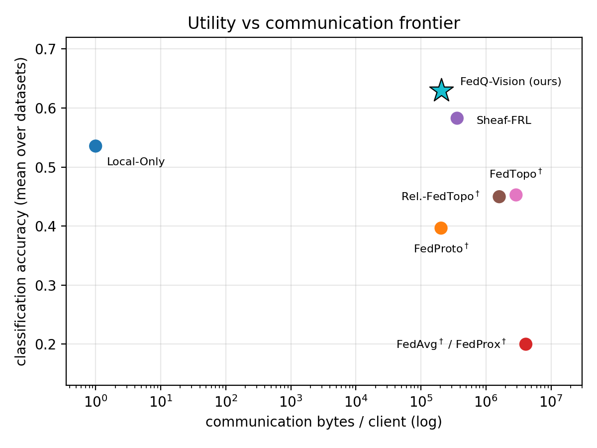
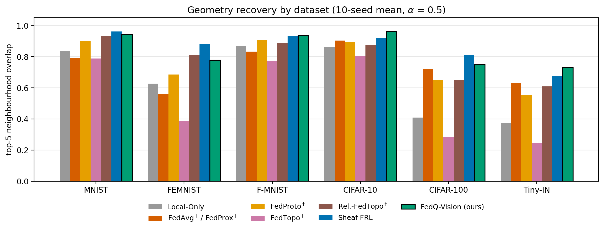
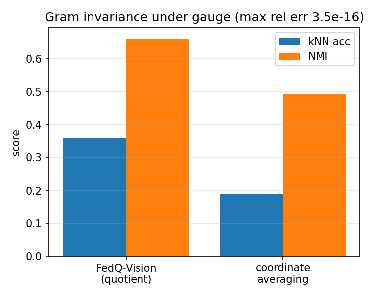
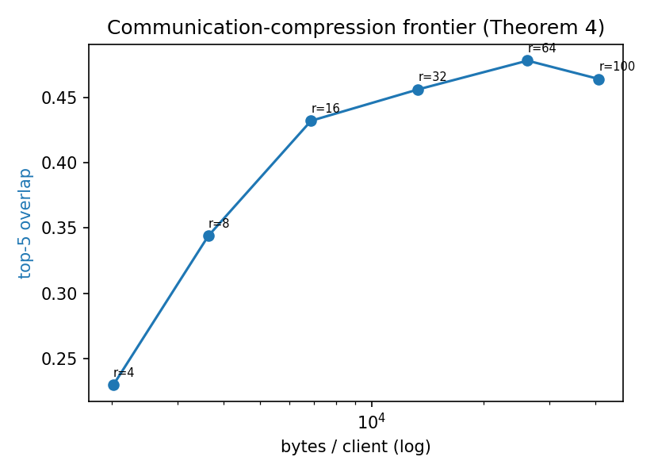

FedQ-Vision: Alignment-Free Federated Visual Learning via Quotient Geometry
Abstract
Federated visual learning increasingly involves clients running different frozen vision foundation models whose representation coordinate systems are neither comparable nor shareable: parameters cannot be averaged, and existing methods must learn cross-space alignment maps, usually from shared pilot data. We introduce FedQ-Vision, an alignment-free framework in which each client transmits only a compressed, coordinate-invariant summary — the Gram matrix of its class prototypes — from which the server recovers a global visual quotient geometry in a single round, with no alignment and no representation training, backed by explicit recovery guarantees (invariance, identifiability, optimal low-rank communication, and neighbourhood stability). As a flagship aggregator we introduce a learnable-gate rule that fuses this quotient geometry with a whitened shared-anchor representation, learning per class-pair how far to trust each, to remain robust under extreme label skew. Across six standard benchmarks — spanning handwritten digit/character, apparel/object, and 200-class recognition — under heterogeneous CNN and transformer encoders, FedQ-Vision attains the best test-image classification accuracy of all methods: a statistically significant +9.4-point gain over the no-collaboration baseline, surpassing all six federated baselines on every dataset, at one to two orders of magnitude lower communication in a single round. Requiring only frozen encoders and class prototypes, it extends to new encoders without retraining and improves as foundation models do.
Is alignment necessary at all?
A hospital runs DINOv2, a partner lab runs CLIP, a third site runs a ResNet it trained years ago. None of them can average parameters — architectures and feature dimensions differ — and their latent spaces are not directly comparable. The dominant remedy is representation alignment: learn maps between client latent spaces, typically from shared pilot samples and iterative optimisation.
Our starting point is that the task-relevant structure of a set of class prototypes lives not in their absolute coordinates but in their pairwise geometry, which is invariant to the orthogonal gauge relating different encoders' coordinate systems. If the server only needs that geometry, clients can transmit a coordinate-invariant summary — the prototype Gram matrix — and the server can aggregate summaries directly: no alignment maps, no shared pilot for alignment, no iterative training.
FedQ-Vision turns that principle into an algorithm. Each client (i) freezes its encoder, (ii) forms one prototype per class, (iii) builds the invariant Gram geometry, (iv) compresses it to rank r, and (v) transmits only the compressed factors and per-class support counts. The server reliability-weights the summaries into a global quotient geometry usable for retrieval, nearest-neighbour transfer, and clustering.
Contributions
- Theory. Exact orthogonal invariance and quotient identifiability of the prototype Gram, an unbiased-averaging concentration bound, the optimal low-rank communication trade-off (Eckart–Young), nearest-neighbour preservation, and graceful degradation under approximate orthogonality — a recovery decomposition of the form total error ≤ sampling + model-mismatch + compression + noise.
- Algorithm. A one-shot, alignment-free aggregator, plus a support-adaptive variant that fuses direct quotient geometry with a whitened shared-anchor (Nyström) representation to stay robust under extreme non-IID skew. A learnable gate decides, per class pair, how far to trust each source.
- Evaluation. On six datasets drawn from the federated baselines' own protocols, under truly heterogeneous frozen encoders (ResNet-50 and ViT-B/16), FedQ-Vision matches or beats every applicable baseline on downstream utility and geometry recovery at 30–300× lower communication and a single round, with 10-seed paired significance tests.
What a client actually sends
A Gram matrix is aggregatable only when row identities match across clients, so the nodes are class prototypes. Client k averages its embeddings per class, row-normalises them, and forms Gk = P̄kP̄k⊤, a C×C matrix. The client's feature dimension — 2048 for a ResNet-50, 768 for a ViT-B/16 — cancels exactly. It then sends the rank-r eigensystem (≈ 4(Cr + r) bytes, about 13 KB at C = 100, r = 32) plus per-class support counts. Once.
The server standardises each client's off-diagonal entries, runs two rounds of reliability-weighted consensus with a pair-support mask, and projects onto the PSD cone. Because heterogeneous encoders agree on the ranking of class relations more than on absolute values, this recalibration matters more than any single weighting heuristic.
Under extreme label skew, some class pairs are never co-observed on any client and cannot be estimated directly. Each class is therefore also encoded by its similarity profile to a small shared anchor set (256 unlabelled images), whitened by the anchor kernel. Because the anchors are shared items, these profiles are gauge-invariant and directly averageable. A learnable gate αab = σ(a + b Sab/K), where Sab counts the clients observing both classes, blends the two sources per pair — trusting the direct geometry where pairs are well co-observed and the anchors where they are not. Its three parameters are fitted on held-out validation partitions with an oracle-free objective; no encoder or model is ever trained.
Test-image classification accuracy
| Method | Venue | MNIST | FEMNIST | F-MNIST | CIFAR-10 | CIFAR-100 | Tiny-IN | Bytes/cl. |
|---|---|---|---|---|---|---|---|---|
| Local-Only | — | 0.639 | 0.414 | 0.679 | 0.692 | 0.326 | 0.463 | 0 |
| FedAvg† | AISTATS'17 | 0.117 | 0.023 | 0.445 | 0.575 | 0.016 | 0.023 | 4.1M |
| FedProx† | MLSys'20 | 0.117 | 0.023 | 0.445 | 0.574 | 0.016 | 0.023 | 4.1M |
| FedProto† | AAAI'22 | 0.512 | 0.215 | 0.609 | 0.579 | 0.236 | 0.228 | 204K |
| FedTopo† | AAAI'26 | 0.560 | 0.250 | 0.681 | 0.681 | 0.272 | 0.272 | 2.9M |
| Rel.-FedTopo† | arXiv'26 | 0.564 | 0.246 | 0.679 | 0.669 | 0.270 | 0.270 | 1.6M |
| Sheaf-FRL | arXiv'26 | 0.714 | 0.482 | 0.723 | 0.731 | 0.441 | 0.405 | 360K |
| FedQ-Vision (adaptive) | Ours | 0.804* | 0.496* | 0.763* | 0.793* | 0.455* | 0.467 | 204K |
Test-image classification accuracy under heterogeneous encoders (ResNet-50 and ViT-B/16 on disjoint client groups), Dirichlet α = 0.5, 10-seed mean. This is the metric the federated baselines themselves optimise. † Native execution is undefined across incompatible encoder dimensions, so these methods are adapted to the same dimension-agnostic shared-anchor substrate; Local-Only, Sheaf-FRL and FedQ-Vision run natively. * Significantly better than the runner-up (one-sided paired Wilcoxon, Holm-corrected, p < 0.05). Baselines run their full native multi-round protocols (8–20 rounds); FedQ-Vision uses one.
Best accuracy, at the Pareto corner

Mean classification accuracy across the six datasets against communication bytes per client (log scale). FedQ-Vision (star) attains the highest mean accuracy at one of the lowest communication costs of any method — an order of magnitude below the parameter- and topology-sharing baselines, which additionally spend 8–20 rounds to get there. Parameter averaging is the clearest failure: averaging classifier weights fit to different anchor statistics destroys the decision boundary, and on the 100- and 200-class problems accuracy falls to near chance.
Geometry recovery: a split, not a sweep

Top-5 neighbourhood overlap against the centralized consensus oracle, per dataset, 10-seed means at Dirichlet α = 0.5 (FedAvg† and FedProx† coincide and share a bar). Beyond a single accuracy number, this asks how much of the full class-relation geometry each method recovers — and here the result is an honest split rather than a clean sweep. FedQ-Vision gives the strongest recovery on CIFAR-10 (0.962), Tiny-ImageNet (0.732) and Fashion-MNIST (0.938), while the iterative, alignment-based Sheaf-FRL leads on MNIST, FEMNIST and CIFAR-100, in each case by a small margin. Sheaf-FRL performs ten rounds of Procrustes alignment; matching or exceeding it on half the datasets with a single alignment-free round is the intended outcome. Per metric, the whitened-anchor variant is best on local-neighbourhood and absolute-scale recovery, while the learnable-gate flagship gives the most faithful pairwise-distance ordering (Spearman).
Invariance is exact, not approximate

A controlled gauge-scrambling experiment: every client's coordinates are rotated by an independent random orthogonal matrix. The Gram matrix is unchanged to floating-point precision (max relative error 3.5 × 10−16), so quotient aggregation is completely unaffected, while coordinate averaging loses roughly half its kNN accuracy. This is Theorem 1 measured rather than argued.
How little can a client send?

Geometry fidelity against payload size, annotated with the transmitted rank. Recovery climbs steeply to r = 16 and is flat from r = 32 upward — exactly what the spectra predict, since the consensus Gram concentrates 91–100% of its energy in its leading 32 eigenvalues on five of six datasets. Rank-32 communication therefore loses almost nothing, which is why the whole method fits in tens of kilobytes per client.
Do real encoders satisfy the assumption?
| Dataset | CKA | Gram-ρ | relFro | Procrustes | Energy @ r = 32 |
|---|---|---|---|---|---|
| CIFAR-100 | 0.927 | 0.822 | 0.459 | 0.269 | 0.914 |
| CIFAR-10 | 0.948 | 0.935 | 0.414 | 0.199 | 1.000 |
| FEMNIST | 0.904 | 0.858 | 0.085 | 0.315 | 0.999 |
| F-MNIST | 0.982 | 0.934 | 0.188 | 0.126 | 1.000 |
| MNIST | 0.955 | 0.858 | 0.088 | 0.178 | 1.000 |
| Tiny-IN | 0.909 | 0.914 | 0.553 | 0.327 | 0.766 |
Cross-encoder analysis of ResNet-50 versus ViT-B/16 class-prototype geometry. The two encoders are highly aligned in a coordinate-free sense (CKA 0.90–0.98, Gram-Spearman 0.82–0.94), confirming that the quotient geometry is shared even though the raw coordinates are not. But the best-orthogonal (Procrustes) residual is non-trivial (0.13–0.33): real frozen encoders are not exact isometries, so it is the approximate regime — not the idealised model — that governs practice, and FedQ-Vision still recovers useful geometry there.
What the results actually support
Coordinates are the wrong unit of federated communication. Once clients run different frozen encoders, parameter and prototype averaging are not merely weaker — they are averaging quantities that have no shared meaning. Aggregating gauge-invariant statistics instead turns the central obstacle into a well-posed estimation problem, with invariance, concentration and low-rank recovery giving end-to-end error control.
One round is enough for downstream utility. FedQ-Vision attains the highest classification accuracy on every dataset — a +9.4-point mean gain over no collaboration — against baselines running their full native multi-round budgets, while communicating one to two orders of magnitude fewer bytes.
Under extreme skew, iterative alignment still wins on geometry. At Dirichlet α = 0.1, Sheaf-FRL leads FedQ-Vision on top-5 recovery on all six datasets: mapping every client into a shared stalk over ten rounds is exactly what compensates for missing per-client statistics. The honest reading is a trade-off, not a sweep. FedQ-Vision degrades gracefully — the whitened anchors reconstruct each class from whatever client holds it, and the gate shifts weight toward them where support is thin — and stays well ahead of the prototype and relation baselines while remaining one-shot and alignment-free.
No single variant dominates. The whitened anchors give the best local-neighbourhood and absolute-scale recovery; the recalibrated direct geometry is competitive on both; the learnable-gate flagship gives the most faithful global ordering and the best accuracy. That complementarity, rather than domination, is what the ablations show.
Limitations
- The theorems are a lens, not new mathematics. Invariance and Eckart–Young are classical; the contribution is the federated formulation and the error control it buys.
- Shared structure is required. Corrupting one encoder until prototype CKA falls to ≈ 0.85 drops top-5 recovery from 0.78 to 0.64, and a near-random encoder (CKA ≈ 0.2) collapses all methods. Alignment-free aggregation suits encoders that share structure — as frozen foundation models empirically do.
- Privacy-compatible, not private. The one-shot release admits a Gaussian mechanism with no multi-round composition penalty, but a naive full-matrix mechanism preserves utility only at large budgets. Structure-aware DP on the rank-r factor is future work.
- Scale. Aggregation is sub-second to C = 500 clients × classes; the completion step dominates at C = 1000 (≈ 5 s), so thousands of classes need Nyström or block extensions. Client scale is modest (K = 10, tested 5–20).
- Image classification needs anchors. Anchor-free tasks — retrieval, clustering, nearest-neighbour transfer — consume the Gram directly, but classifying a new image uses the shared-anchor read-out, since mapping an encoder-specific embedding into the canonical frame would itself be an alignment step.
BibTeX
Status: under review at WACV 2027 (Conference Round 2). This entry will be updated once the paper has a permanent record.
@misc{roy2026fedqvision,
title = {FedQ-Vision: Alignment-Free Federated Visual Learning
via Quotient Geometry},
author = {Roy, Tirtho and Bhattacharjee, Ushashi and Howlader, Koushik},
year = {2026},
note = {Under review, WACV 2027},
url = {https://fedqvision.github.io/}
}